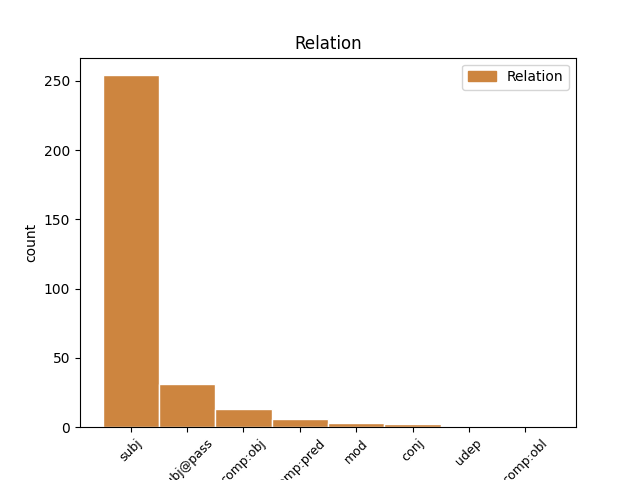
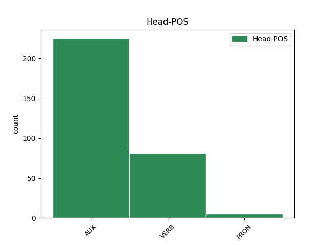
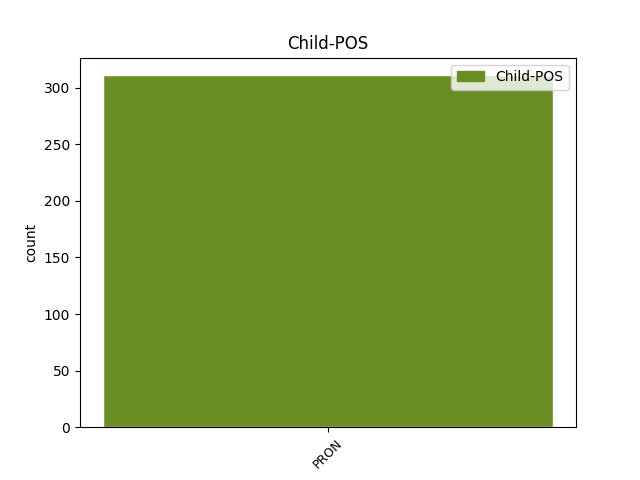

Distribution of features within this leaf



Agreement Rules sorted by frequency.
- When the dependent token is the subject(subj) of the head token, and the head token is AUX and the dependent token is PRON.
1 When _ _ _ _ 0 _ _ _
2 she _ _ _ _ 0 _ _ _
3 imitated _ _ _ _ 0 _ _ _
4 the _ _ _ _ 0 _ _ _
5 horse _ _ _ _ 0 _ _ _
6 that _ _ _ _ 0 _ _ _
7 crieth _ _ _ _ 0 _ _ _
8 among _ _ _ _ 0 _ _ _
9 the _ _ _ _ 0 _ _ _
10 trumpets _ _ _ _ 0 _ _ _
11 ' _ _ _ _ 0 _ _ _
12 Aha _ _ _ _ 0 _ _ _
13 ! _ _ _ _ 0 _ _ _
14 ' _ _ _ _ 0 _ _ _
15 , _ _ _ _ 0 _ _ _
16 I I PRON PERS-P1SG-NOM Case=Nom|Number=Sing|Person=1|PronType=Prs 17 subj _ _
17 was be AUX PAST Mood=Ind|Number=Sing|Person=1|Tense=Past|VerbForm=Fin 0 _ _ _
18 back _ _ _ _ 0 _ _ _
19 with _ _ _ _ 0 _ _ _
20 Grandmother _ _ _ _ 0 _ _ _
21 again _ _ _ _ 0 _ _ _
22 , _ _ _ _ 0 _ _ _
23 back _ _ _ _ 0 _ _ _
24 with _ _ _ _ 0 _ _ _
25 the _ _ _ _ 0 _ _ _
26 weekly _ _ _ _ 0 _ _ _
27 visits _ _ _ _ 0 _ _ _
28 and _ _ _ _ 0 _ _ _
29 the _ _ _ _ 0 _ _ _
30 preposterous _ _ _ _ 0 _ _ _
31 slippers _ _ _ _ 0 _ _ _
32 , _ _ _ _ 0 _ _ _
33 the _ _ _ _ 0 _ _ _
34 huge _ _ _ _ 0 _ _ _
35 full-length _ _ _ _ 0 _ _ _
36 apron _ _ _ _ 0 _ _ _
37 , _ _ _ _ 0 _ _ _
38 its _ _ _ _ 0 _ _ _
39 pocket _ _ _ _ 0 _ _ _
40 stuffed _ _ _ _ 0 _ _ _
41 with _ _ _ _ 0 _ _ _
42 Polo _ _ _ _ 0 _ _ _
43 mints _ _ _ _ 0 _ _ _
44 and _ _ _ _ 0 _ _ _
45 a _ _ _ _ 0 _ _ _
46 battered _ _ _ _ 0 _ _ _
47 Bible _ _ _ _ 0 _ _ _
48 . _ _ _ _ 0 _ _ _
1 ' _ _ _ _ 0 _ _ _
2 I I PRON PERS-P1SG-NOM Case=Nom|Number=Sing|Person=1|PronType=Prs 3 subj _ _
3 was be VERB PAST Mood=Ind|Number=Sing|Person=1|Tense=Past|VerbForm=Fin 0 _ _ _
4 . _ _ _ _ 0 _ _ _
5 ' _ _ _ _ 0 _ _ _
1 She _ _ _ _ 0 _ _ _
2 had _ _ _ _ 0 _ _ _
3 only _ _ _ _ 0 _ _ _
4 fetched _ _ _ _ 0 _ _ _
5 enough _ _ _ _ 0 _ _ _
6 for _ _ _ _ 0 _ _ _
7 herself _ _ _ _ 0 _ _ _
8 but _ _ _ _ 0 _ _ _
9 there _ _ _ _ 0 _ _ _
10 seemed _ _ _ _ 0 _ _ _
11 to _ _ _ _ 0 _ _ _
12 be _ _ _ _ 0 _ _ _
13 plenty _ _ _ _ 0 _ _ _
14 for _ _ _ _ 0 _ _ _
15 everyone _ _ _ _ 0 _ _ _
16 and _ _ _ _ 0 _ _ _
17 so _ _ _ _ 0 _ _ _
18 I I PRON PERS-P1SG-NOM Case=Nom|Number=Sing|Person=1|PronType=Prs 19 subj@pass _ _
19 was be AUX PAST Mood=Ind|Number=Sing|Person=1|Tense=Past|VerbForm=Fin 0 _ _ _
20 born _ _ _ _ 0 _ _ _
21 , _ _ _ _ 0 _ _ _
22 in _ _ _ _ 0 _ _ _
23 dirt _ _ _ _ 0 _ _ _
24 , _ _ _ _ 0 _ _ _
25 in _ _ _ _ 0 _ _ _
26 delight _ _ _ _ 0 _ _ _
27 , _ _ _ _ 0 _ _ _
28 in _ _ _ _ 0 _ _ _
29 water _ _ _ _ 0 _ _ _
30 and _ _ _ _ 0 _ _ _
31 in _ _ _ _ 0 _ _ _
32 spirits _ _ _ _ 0 _ _ _
33 , _ _ _ _ 0 _ _ _
34 with _ _ _ _ 0 _ _ _
35 fish _ _ _ _ 0 _ _ _
36 above _ _ _ _ 0 _ _ _
37 and _ _ _ _ 0 _ _ _
38 below _ _ _ _ 0 _ _ _
39 and _ _ _ _ 0 _ _ _
40 under _ _ _ _ 0 _ _ _
41 an _ _ _ _ 0 _ _ _
42 exacting _ _ _ _ 0 _ _ _
43 star _ _ _ _ 0 _ _ _
44 . _ _ _ _ 0 _ _ _
1 He _ _ _ _ 0 _ _ _
2 keeps keep VERB PRES Mood=Ind|Number=Sing|Person=3|Tense=Pres|VerbForm=Fin 0 _ _ _
3 them they PRON PERS-P3PL-ACC Case=Acc|Number=Plur|Person=3|PronType=Prs 2 comp:obj _ _
4 in _ _ _ _ 0 _ _ _
5 place _ _ _ _ 0 _ _ _
6 . _ _ _ _ 0 _ _ _
1 she _ _ _ _ 0 _ _ _
2 was _ _ _ _ 0 _ _ _
3 of _ _ _ _ 0 _ _ _
4 the _ _ _ _ 0 _ _ _
5 generation _ _ _ _ 0 _ _ _
6 and _ _ _ _ 0 _ _ _
7 class _ _ _ _ 0 _ _ _
8 that _ _ _ _ 0 _ _ _
9 paid _ _ _ _ 0 _ _ _
10 other _ _ _ _ 0 _ _ _
11 women _ _ _ _ 0 _ _ _
12 to _ _ _ _ 0 _ _ _
13 knit _ _ _ _ 0 _ _ _
14 and _ _ _ _ 0 _ _ _
15 now _ _ _ _ 0 _ _ _
16 that _ _ _ _ 0 _ _ _
17 she she PRON PERS-SG-NOM Case=Nom|Gender=Fem|Number=Sing|Person=3|PronType=Prs 0 _ _ _
18 herself herself PRON RFL-P3SG Case=Acc|Gender=Fem|Number=Sing|Person=3|PronType=Prs|Reflex=Yes 17 mod _ _
19 was _ _ _ _ 0 _ _ _
20 about _ _ _ _ 0 _ _ _
21 to _ _ _ _ 0 _ _ _
22 be _ _ _ _ 0 _ _ _
23 a _ _ _ _ 0 _ _ _
24 grandmother _ _ _ _ 0 _ _ _
25 she _ _ _ _ 0 _ _ _
26 made _ _ _ _ 0 _ _ _
27 funny _ _ _ _ 0 _ _ _
28 stuffed _ _ _ _ 0 _ _ _
29 toys _ _ _ _ 0 _ _ _
30 for _ _ _ _ 0 _ _ _
31 nieces _ _ _ _ 0 _ _ _
32 and _ _ _ _ 0 _ _ _
33 nephews _ _ _ _ 0 _ _ _
34 . _ _ _ _ 0 _ _ _
1 Yes _ _ _ _ 0 _ _ _
2 . _ _ _ _ 0 _ _ _
3 That _ _ _ _ 0 _ _ _
4 was be AUX PAST Mood=Ind|Number=Sing|Person=1|Tense=Past|VerbForm=Fin 0 _ _ _
5 me I PRON PERS-P1SG-ACC Case=Acc|Number=Sing|Person=1|PronType=Prs 4 comp:pred _ SpaceAfter=No
6 . _ _ _ _ 0 _ _ _
1 And _ _ _ _ 0 _ _ _
2 though _ _ _ _ 0 _ _ _
3 he _ _ _ _ 0 _ _ _
4 is _ _ _ _ 0 _ _ _
5 not _ _ _ _ 0 _ _ _
6 permitted _ _ _ _ 0 _ _ _
7 to _ _ _ _ 0 _ _ _
8 sit _ _ _ _ 0 _ _ _
9 beside _ _ _ _ 0 _ _ _
10 women _ _ _ _ 0 _ _ _
11 unrelated _ _ _ _ 0 _ _ _
12 to _ _ _ _ 0 _ _ _
13 him _ _ _ _ 0 _ _ _
14 or _ _ _ _ 0 _ _ _
15 to _ _ _ _ 0 _ _ _
16 look _ _ _ _ 0 _ _ _
17 at _ _ _ _ 0 _ _ _
18 them _ _ _ _ 0 _ _ _
19 or _ _ _ _ 0 _ _ _
20 to _ _ _ _ 0 _ _ _
21 communicate _ _ _ _ 0 _ _ _
22 with _ _ _ _ 0 _ _ _
23 them _ _ _ _ 0 _ _ _
24 in _ _ _ _ 0 _ _ _
25 any _ _ _ _ 0 _ _ _
26 manner _ _ _ _ 0 _ _ _
27 ( _ _ _ _ 0 _ _ _
28 all _ _ _ _ 0 _ _ _
29 of _ _ _ _ 0 _ _ _
30 which _ _ _ _ 0 _ _ _
31 probably _ _ _ _ 0 _ _ _
32 saves save VERB PRES Mood=Ind|Number=Sing|Person=3|Tense=Pres|VerbForm=Fin 0 _ _ _
33 him he PRON PERS-P3SG-ACC Case=Acc|Gender=Masc|Number=Sing|Person=3|PronType=Prs 32 comp:obl _ _
34 a _ _ _ _ 0 _ _ _
35 great _ _ _ _ 0 _ _ _
36 deal _ _ _ _ 0 _ _ _
37 of _ _ _ _ 0 _ _ _
38 trouble _ _ _ _ 0 _ _ _
39 ) _ _ _ _ 0 _ _ _
40 , _ _ _ _ 0 _ _ _
41 he _ _ _ _ 0 _ _ _
42 seems _ _ _ _ 0 _ _ _
43 a _ _ _ _ 0 _ _ _
44 good-hearted _ _ _ _ 0 _ _ _
45 young _ _ _ _ 0 _ _ _
46 man _ _ _ _ 0 _ _ _
47 and _ _ _ _ 0 _ _ _
48 he _ _ _ _ 0 _ _ _
49 is _ _ _ _ 0 _ _ _
50 visibly _ _ _ _ 0 _ _ _
51 enjoying _ _ _ _ 0 _ _ _
52 himself _ _ _ _ 0 _ _ _
53 . _ _ _ _ 0 _ _ _
Disagree Examples:
1 It _ _ _ _ 0 _ _ _
2 was _ _ _ _ 0 _ _ _
3 a _ _ _ _ 0 _ _ _
4 wrong _ _ _ _ 0 _ _ _
5 number _ _ _ _ 0 _ _ _
6 that _ _ _ _ 0 _ _ _
7 started _ _ _ _ 0 _ _ _
8 it _ _ _ _ 0 _ _ _
9 , _ _ _ _ 0 _ _ _
10 the _ _ _ _ 0 _ _ _
11 telephone _ _ _ _ 0 _ _ _
12 ringing _ _ _ _ 0 _ _ _
13 three _ _ _ _ 0 _ _ _
14 times _ _ _ _ 0 _ _ _
15 in _ _ _ _ 0 _ _ _
16 the _ _ _ _ 0 _ _ _
17 dead _ _ _ _ 0 _ _ _
18 of _ _ _ _ 0 _ _ _
19 night _ _ _ _ 0 _ _ _
20 , _ _ _ _ 0 _ _ _
21 and _ _ _ _ 0 _ _ _
22 the _ _ _ _ 0 _ _ _
23 voice _ _ _ _ 0 _ _ _
24 on _ _ _ _ 0 _ _ _
25 the _ _ _ _ 0 _ _ _
26 other _ _ _ _ 0 _ _ _
27 end _ _ _ _ 0 _ _ _
28 asking _ _ _ _ 0 _ _ _
29 for _ _ _ _ 0 _ _ _
30 someone _ _ _ _ 0 _ _ _
31 he he PRON PERS-P3SG-NOM Case=Nom|Gender=Masc|Number=Sing|Person=3|PronType=Prs 32 subj _ _
32 was be VERB PAST Mood=Ind|Number=Sing|Person=1|Tense=Past|VerbForm=Fin 0 _ _ _
33 not _ _ _ _ 0 _ _ _
34 . _ _ _ _ 0 _ _ _
1 Much _ _ _ _ 0 _ _ _
2 later _ _ _ _ 0 _ _ _
3 , _ _ _ _ 0 _ _ _
4 when _ _ _ _ 0 _ _ _
5 he he PRON PERS-P3SG-NOM Case=Nom|Gender=Masc|Number=Sing|Person=3|PronType=Prs 6 subj _ _
6 was be AUX PAST Mood=Ind|Number=Sing|Person=1|Tense=Past|VerbForm=Fin 0 _ _ _
7 able _ _ _ _ 0 _ _ _
8 to _ _ _ _ 0 _ _ _
9 think _ _ _ _ 0 _ _ _
10 about _ _ _ _ 0 _ _ _
11 the _ _ _ _ 0 _ _ _
12 things _ _ _ _ 0 _ _ _
13 that _ _ _ _ 0 _ _ _
14 happened _ _ _ _ 0 _ _ _
15 to _ _ _ _ 0 _ _ _
16 him _ _ _ _ 0 _ _ _
17 , _ _ _ _ 0 _ _ _
18 he _ _ _ _ 0 _ _ _
19 would _ _ _ _ 0 _ _ _
20 conclude _ _ _ _ 0 _ _ _
21 that _ _ _ _ 0 _ _ _
22 nothing _ _ _ _ 0 _ _ _
23 was _ _ _ _ 0 _ _ _
24 real _ _ _ _ 0 _ _ _
25 except _ _ _ _ 0 _ _ _
26 chance _ _ _ _ 0 _ _ _
27 . _ _ _ _ 0 _ _ _
1 Who _ _ _ _ 0 _ _ _
2 he he PRON PERS-P3SG-NOM Case=Nom|Gender=Masc|Number=Sing|Person=3|PronType=Prs 3 subj _ _
3 was be AUX PAST Mood=Ind|Number=Sing|Person=1|Tense=Past|VerbForm=Fin 0 _ _ _
4 , _ _ _ _ 0 _ _ _
5 where _ _ _ _ 0 _ _ _
6 he _ _ _ _ 0 _ _ _
7 came _ _ _ _ 0 _ _ _
8 from _ _ _ _ 0 _ _ _
9 , _ _ _ _ 0 _ _ _
10 and _ _ _ _ 0 _ _ _
11 what _ _ _ _ 0 _ _ _
12 he _ _ _ _ 0 _ _ _
13 did _ _ _ _ 0 _ _ _
14 are _ _ _ _ 0 _ _ _
15 of _ _ _ _ 0 _ _ _
16 no _ _ _ _ 0 _ _ _
17 great _ _ _ _ 0 _ _ _
18 importance _ _ _ _ 0 _ _ _
19 . _ _ _ _ 0 _ _ _
1 We _ _ _ _ 0 _ _ _
2 know _ _ _ _ 0 _ _ _
3 , _ _ _ _ 0 _ _ _
4 for _ _ _ _ 0 _ _ _
5 example _ _ _ _ 0 _ _ _
6 , _ _ _ _ 0 _ _ _
7 that _ _ _ _ 0 _ _ _
8 he he PRON PERS-P3SG-NOM Case=Nom|Gender=Masc|Number=Sing|Person=3|PronType=Prs 9 subj _ _
9 was be AUX PAST Mood=Ind|Number=Sing|Person=1|Tense=Past|VerbForm=Fin 0 _ _ _
10 thirty-five _ _ _ _ 0 _ _ _
11 years _ _ _ _ 0 _ _ _
12 old _ _ _ _ 0 _ _ _
13 . _ _ _ _ 0 _ _ _
1 Because _ _ _ _ 0 _ _ _
2 he _ _ _ _ 0 _ _ _
3 spent _ _ _ _ 0 _ _ _
4 no _ _ _ _ 0 _ _ _
5 more _ _ _ _ 0 _ _ _
6 than _ _ _ _ 0 _ _ _
7 five _ _ _ _ 0 _ _ _
8 or _ _ _ _ 0 _ _ _
9 six _ _ _ _ 0 _ _ _
10 months _ _ _ _ 0 _ _ _
11 on _ _ _ _ 0 _ _ _
12 a _ _ _ _ 0 _ _ _
13 novel _ _ _ _ 0 _ _ _
14 , _ _ _ _ 0 _ _ _
15 for _ _ _ _ 0 _ _ _
16 the _ _ _ _ 0 _ _ _
17 rest _ _ _ _ 0 _ _ _
18 of _ _ _ _ 0 _ _ _
19 the _ _ _ _ 0 _ _ _
20 year _ _ _ _ 0 _ _ _
21 he he PRON PERS-P3SG-NOM Case=Nom|Gender=Masc|Number=Sing|Person=3|PronType=Prs 22 subj _ _
22 was be AUX PAST Mood=Ind|Number=Sing|Person=1|Tense=Past|VerbForm=Fin 0 _ _ _
23 free _ _ _ _ 0 _ _ _
24 to _ _ _ _ 0 _ _ _
25 do _ _ _ _ 0 _ _ _
26 as _ _ _ _ 0 _ _ _
27 he _ _ _ _ 0 _ _ _
28 wished _ _ _ _ 0 _ _ _
29 . _ _ _ _ 0 _ _ _